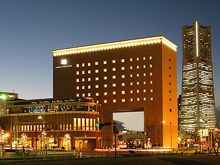
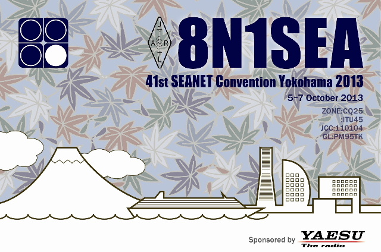
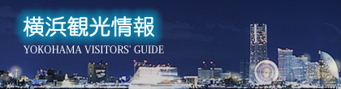

|

41st SEANET YOKOHAMA 2013 PROGRAMME
SEANET 2013 Itinerary
| DATE | TIME | EVENTS | VENUE |
|---|---|---|---|
Saturday, 05 Oct.2013 |
1400 - 1800 1800 - 2100 |
Arrivals & Regetration Welcome Party |
NAVIOS YOKOHAMA HOTEL |
Sunday, 06 Oct.2013 |
0700 - 1000 0930 - 1800 - 2100 |
Breakfast SIGHTSEEING in Yokohama,Sankeien etc. GALA PARTY |
NAVIOS YOKOHAMA HOTEL Lunch (Chinatown) Yokohama Country & Athletic Club |
Monday, 07 Oct.2013 |
0900 - 1230 |
Breakfast Seminar SeminarPlenary meeting 0900-1230 T32AZ Seanet contest station by KH6QJ What is SDR? by JH1EPI Modern HF receiver by YAESU Farewell Lunch 1230- |
NAVIOS YOKOHAMA HOTEL |

"NAVIOS YOKOHAMA HOTEL"
NAVIOS YOKOHAMAÅEACCESS(English Info-Page)
|
What kind of city is Yokohama?
Yokohama is a city that holds a special place in the hearts of most Japanese. It is a vibrant city that, on holidays, draws people from all over the country, whether they are young couples on dates or families with children. The reason the city attracts so many visitors lies in its many and varied facets. You can take a walk along the harbor while admiring the buildings or enjoy shopping or good food at the many malls and restaurants or maybe experience the wonders of Chinatown. The warterfront area known as Minato Mirai 21 is particularly popular. With the many festivals and events held throughout the year, Yokohama is a lively and colorful city.
Åõ Minato Mirai 21 Area:
Åõ Yokohama Chinatown:
Åõ Sankeien Garden:
|


SEANET 2013 Special event station "8N1SEA"
Will be operating from NAVIOS HOTEL.
|
|
|
|
|
|

Supported by Yokohama Convention & Visitors Bureau